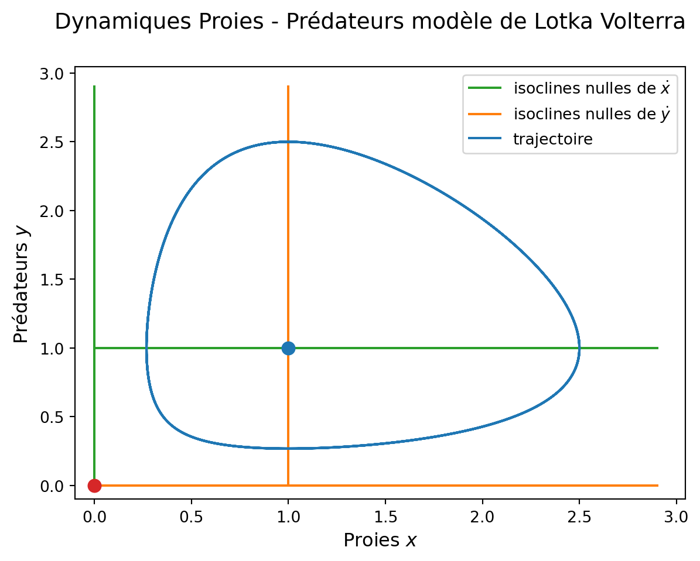
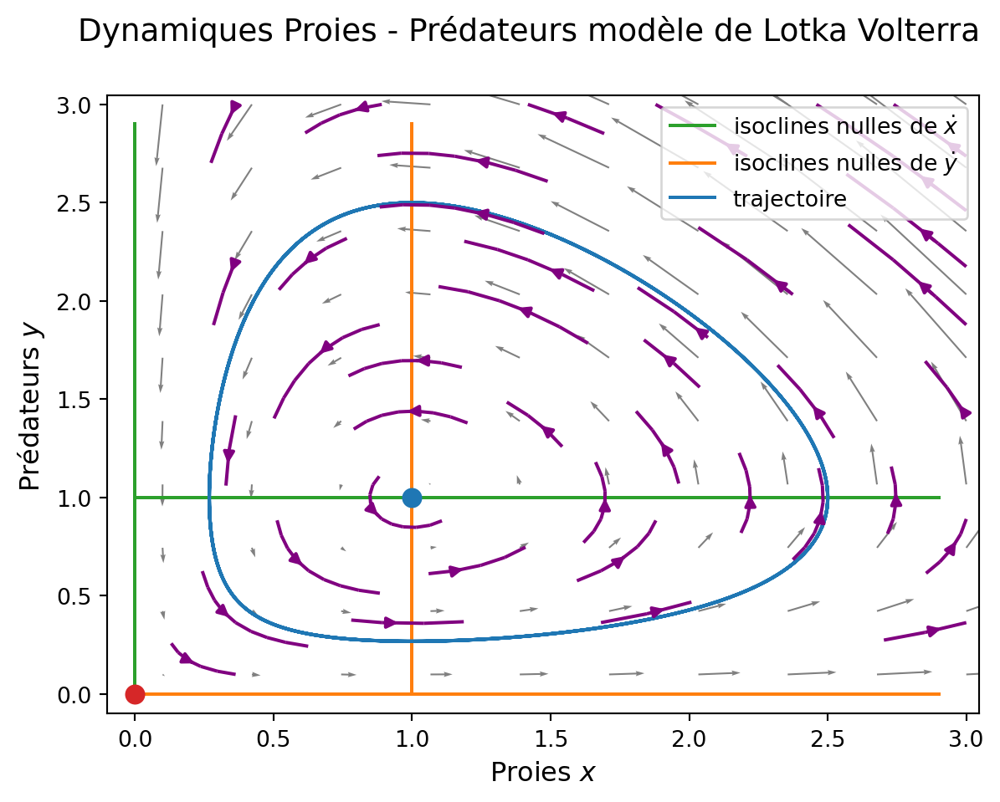
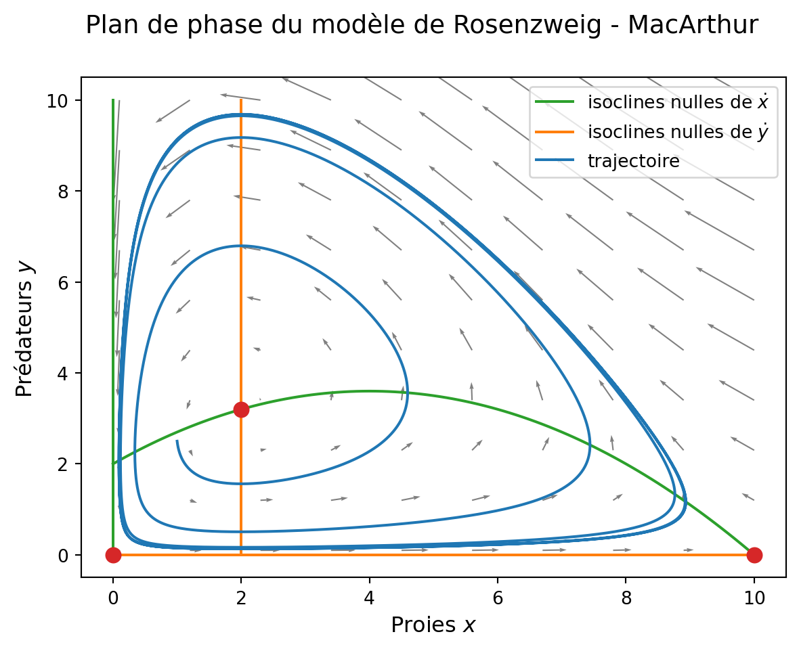

Nous considérons le modèle de dynamique de populations de Lotka (1925) et Volterra (1926) :
\left\{\begin{array}{l}
\dot x = rx - c xy,\\
\dot y = bxy - m y.
\end{array}\right.
\tag{1}
Dynamiques
Il n’y a pas de difficulté particulière à la simulation par rapport au modèle de la tordeuse du bourgeon de l’épinette avec population d’oiseaux variables.
Code
## on nettoie l'espace de travail et on reload les modules%reset -fimport numpy as npimport matplotlib.pyplot as pltfrom scipy.integrate import odeint## densités initiales des populationsx0 =1y0 =2.5etat0_LV = np.array([x0, y0])## tspant_0 =0t_fin =30.0pas_t =0.01tspan = np.arange(t_0, t_fin, pas_t)## paramètres du modèler =1.0c =1.0b =1.0m =1.0params_LV = np.array([r, c, b, m])## définition du modèle de Lotka Volterradef model_LV(etat, t, params): x, y = etat # recupere les variables d'etat r, c, b, m = params # recupere les parametres etatdot = [r*x - c*x*y, # dot x b*x*y - m*y] # dot yreturn etatdot # renvoie la derivee## simulation proprement diteint_LV = odeint(model_LV, etat0_LV, tspan, args=(params_LV,), hmax=pas_t)
Représentation graphique contre le temps :
Code
## création d'une figure, et d'un système d'axefig1, ax1 = plt.subplots(1, 1) fig1.suptitle("Dynamiques Proies - Prédateurs modèle de Lotka Volterra", va='top', fontsize='14')## tracé de x et y contre le tempsax1.plot(tspan, int_LV[:, 0], color ='C0', label ="proies $x$")ax1.plot(tspan, int_LV[:, 1], color ='C1', label ="prédateurs $y$")## axes & coax1.set_xlabel('Temps', fontsize='12')ax1.set_ylabel('Densités de populations', fontsize='12')ax1.legend()ax1.grid()
Figure 1: dynamiques des proies et prédateurs contre le temps dans le modèle de Lotka et Volterra (Equation 1)
Plan de phase
Il est intéressant de représenter les trajectoires dans l’espace d’état (x,y), en combinaison avec une analyse qualitative du plan de phase (isoclines nulles, équilibres), une représentation du champs de vecteurs et de quelques morceaux de trajectoires sur le plan.
Commençons par calculer les isoclines nulles et les équilibres.
Code
## array annexes pour le calcul et la représentation des isoclines nullesxplot = np.arange(0, 3, .1) yplot = np.arange(0, 3, .1)## isoclines nulles de xdotnull_x_x = np.zeros_like(yplot) # x = 0 isocline nulle de xdotnull_x_y = np.ones_like(xplot)*(r/c) # y = r/c isocline nulle de xdot## isoclines nulles de ydotnull_y_y = np.zeros_like(xplot) # y = 0 isocline nulle de ydotnull_y_x = np.ones_like(yplot)*(m/b) # x = m/b isocline nulle de ydot## équilibreseq_extinct = [0, 0]eq_coex = [r/c, m/b]
Puis on trace le plan de phase.
Code
## création d'une figure, et d'un système d'axefig2, ax2 = plt.subplots(1, 1) ## titre de la figurefig2.suptitle("Dynamiques Proies - Prédateurs modèle de Lotka Volterra", va='top', fontsize='14')## isoclines nulles ax2.plot(null_x_x, yplot, color ='C2')ax2.plot(xplot, null_x_y, color ='C2', label ="isoclines nulles de $\dot x$")ax2.plot(xplot, null_y_y, color ='C1')ax2.plot(null_y_x, yplot, color ='C1', label ="isoclines nulles de $\dot y$")## équilibresax2.plot(eq_extinct[0], eq_extinct[1], marker ='.', color ='C3', markersize =16)ax2.plot(eq_coex[0], eq_coex[1], marker ='.', color ='C0', markersize =16)## trajectoiresax2.plot(int_LV[:, 0], int_LV[:, 1], color ='C0', label ="trajectoire")## enluminuresax2.set_xlabel('Proies $x$', fontsize='12')ax2.set_ylabel('Prédateurs $y$', fontsize='12')ax2.legend(fontsize='10', loc ="upper right")## modification éventuelle des bornes des axesax2.set_ylim(bottom=-.2, top=None)ax2.set_xlim(left=-.2, right=None);

Figure 2: plan de phase du modèle proies-prédateurs de Lotka Volterra (Equation 1)
Complètons ce plan de phase avec l’orientation du champs de vecteurs (fonction quiver) et des échantillons de trajectoires (fonction streamplot). Ces représentations reposent sur la définition d’une grille de coordonnées sur le plan, via une meshgrid.
## définition de l'échantillonnage selon $x$ et $y$x_grid = np.linspace(0.1, 3.0, 10) # au passage on change un peu de np.arange()y_grid = np.linspace(0.1, 3.0, 10)## grille X,Y selon x_grid et y_gridX, Y = np.meshgrid(x_grid, y_grid)
Sur cette grille, on calcule les dérivées \dot x et \dot y :
dx, dy = model_LV([X, Y], 0, params_LV)
Et on peut compléter le plan de phase :
## tracé du champs de vecteurax2.quiver(X, Y, dx, dy, angles ='xy', color ='grey', width =.002)## tracé des échantillons de trajectoiresax2.streamplot(X, Y, dx, dy, density =0.4, maxlength =0.25, color ="purple")display(fig2)

Figure 3: plan de phase du modèle proies-prédateurs de Lotka Volterra
Important
Attention à l’option angles ='xy' de quiver: les flèches sont ainsi tracées avec orientation en unité naturelle de l’écran et pas en unité naturelle de la figure qui est le comportement par défaut de la méthode (qui n’est pas naturel).
Intégrale première
Finalement on peut représenter l’intégrale première de ce système. Commençons par la définir selon les calculs faits en cours :
fig3, ax3 = plt.subplots(1, 1, subplot_kw={"projection": "3d"}) ## colormapsfrom matplotlib import cm## intégrale première sur la grille X, Yax3.plot_surface(X, Y, int_premiere([X, Y], params_LV), cmap=cm.viridis, antialiased=True, alpha =.7)## réglage de l'angle de vision en fonction de l'élévation et de l'azimutax3.view_init(elev=10, azim=30)## labellisation des axesax3.set_xlabel('Proies $x$', fontsize='12')ax3.set_ylabel('Prédateurs $y$', fontsize='12')ax3.set_zlabel('Intégrale première', fontsize='12')ax3.set_yticklabels([])ax3.set_xticklabels([])ax3.set_zticklabels([])fig3.suptitle("Intégrale première\n modèle de Lotka Volterra", va='top', fontsize='14');
Figure 4: intégrale première du modèle proies prédateurs de Lotka Volterra (Equation 1)
On rajoute la trajectoire et la valeur H(x,y) = H(x_0, y_0) :
## H(x,y) = H(x0,y0)ax3.plot_surface(X, Y, np.ones_like(X)*int_premiere([x0, y0], params_LV), antialiased=True, alpha =.3)## trajectoireax3.plot(int_LV[:,0], int_LV[:,1], int_premiere([int_LV[:,0], int_LV[:,1]], params_LV), color ="red", linewidth =3)display(fig3)
Figure 5: intégrale première du modèle proies prédateurs de Lotka Volterra (Equation 1)
Le modèle de Rosenzweig MacArthur
Nous considérons le modèle de dynamique de populations attribué à Rosenzweig et MacArthur (voir Rosenzweig and MacArthur (1963), Turchin (2003), Smith (2008)).
\left\{\begin{array}{l}
\dot x = \displaystyle rx\left(1-\frac{x}{K}\right) - c \frac{x}{h+x} y\\[.3cm]
\dot y = b\displaystyle \frac{x}{h+x} y - m y
\end{array}\right.
\tag{2}
Dynamiques et plan de phase
Il n’y a pas de difficulté particulière à la simulation par rapport au modèle de Lotka Volterra.
Code
%reset -fimport numpy as npimport matplotlib.pyplot as pltfrom scipy.integrate import odeint## densités initiales des populationsx0 =1y0 =2.5etat0_RMA = np.array([x0, y0])## tspan t_0 =0t_fin =80.0pas_t =0.01tspan = np.arange(t_0, t_fin, pas_t)## paramètres (il y a un cycle limite attractif pour ces valeurs)r =1.0K =10c =1.0h =2.0b =2.0m =1.0params_RMA = np.array([r, K, c, h, b, m])## modèle def model_RMA(etat, t, params): x, y = etat r, K, c, h, b, m = params etatdot = [r*x*(1-x/K) - c*x/(h+x)*y, b*x/(h+x)*y - m*y] return etatdot ## simulation int_RMA = odeint(model_RMA, etat0_RMA, tspan, args=(params_RMA,), hmax=pas_t)
Représentation graphique des trajectoires contre le temps :
Code
fig1, ax1 = plt.subplots(1, 1) fig1.suptitle("Dynamiques du modèle de Rosenzweig - MacArthur", va='top', fontsize='14')## tracé de x et y contre le tempsax1.plot(tspan, int_RMA[:, 0], color ='C0', label ="proies $x$")ax1.plot(tspan, int_RMA[:, 1], color ='C1', label ="prédateurs $y$")## enluminuresax1.set_xlabel('temps', fontsize='12')ax1.set_ylabel('densités de populations', fontsize='12')ax1.legend(fontsize='10')ax1.grid()
Figure 6: simulation des trajectoires du modèle de Rosenzweig et MacArthur (Equation 2)
Représentation graphique dans le plan de phase :
Code
fig2, ax2 = plt.subplots(1, 1) fig2.suptitle("Plan de phase du modèle de Rosenzweig - MacArthur", va='top', fontsize='14')## calcul des isoclines nullesxplot = np.arange(0, K+.1, .1) yplot = np.arange(0, K+.1, .1)null_x_x = np.zeros_like(yplot) null_x_y = r/c*(h+xplot)*(1-xplot/K) null_y_y = np.zeros_like(xplot) null_y_x = np.ones_like(yplot)*m*h/(b-m)## équilibreseq_extinct = [0, 0]eq_coex = [m*h/(b-m), r/c*(h+m*h/(b-m))*(1-m*h/(b-m)/K)]eq_prey = [K, 0]## tracé des isoclines nulles, des équilibres, et de la trajectoire simuléeax2.plot(null_x_x, yplot, color ='C2')ax2.plot(xplot, null_x_y, color ='C2', label ="isoclines nulles de $\dot x$")ax2.plot(xplot, null_y_y, color ='C1')ax2.plot(null_y_x, yplot, color ='C1', label ="isoclines nulles de $\dot y$")## équilibresax2.plot(eq_extinct[0], eq_extinct[1], marker ='.', color ='C3', markersize =16)ax2.plot(eq_coex[0], eq_coex[1], marker ='.', color ='C3', markersize =16)ax2.plot(eq_prey[0], eq_prey[1], marker ='.', color ='C3', markersize =16)## trajectoiresax2.plot(int_RMA[:, 0], int_RMA[:, 1], color ='C0', label ="trajectoire")## enluminuresax2.set_xlabel('Proies $x$', fontsize='12')ax2.set_ylabel('Prédateurs $y$', fontsize='12')ax2.legend(fontsize='10', loc ="upper right")ax2.set_ylim(bottom=-2, top=None)ax2.set_xlim(left=-2, right=None)## représentation du champs de vecteursx_grid = np.linspace(0.1, K, 10) y_grid = np.linspace(0.1, K, 10)X, Y = np.meshgrid(x_grid, y_grid)## dérivées dot_x et dot_y sur la grilledx, dy = model_RMA([X, Y], 0, params_RMA)ax2.quiver(X, Y, dx, dy, angles ='xy', color ='grey', width =.002);

Figure 7: plan de phase du modèle de Rosenzweig et MacArthur (Equation 2)
Diagramme de bifurcations
Nous allons représenter les asymptotiques de la population de prédateurs y^* en fonction de K. Il y a 3 situations asymptotiques distinctes pour le modèle de Rosenzweig MacArthur :
si : 0<K<\displaystyle\frac{mh}{b-m} : les prédateurs s’éteignent et les proies convergent vers K, l’équilibre d’extinction des deux populations est instable.
si : \displaystyle\frac{mh}{b-m} <K< h+\frac{2mh}{b-m} : proies et prédateurs co-existent à un équilibre globalement asymptotiquement stable, l’équilibre d’extinction des prédateurs est instable, l’équilibre d’extinction des deux populations est instable.
si : h+\displaystyle\frac{2mh}{b-m}<K proies et prédateurs co-existent le long d’un cycle limite globalement asymptotiquement stable, l’équilibre d’extinction des prédateurs est instable, l’équilibre d’extinction des deux populations est instable.
Dans un premier temps nous allons calculer et représenter les différents équilibres et leur stabilité dans le plan (K, y), puis nous calculerons et rajouterons une représentation du cycle limite.
fig3, ax3 = plt.subplots(1, 1) fig3.suptitle("Diagramme de bifurcations $y^*$ en fonction de $K$", va='top', fontsize='14')## tracé des différentes branches d'équilibres## situation 1.ax3.plot(Kplot1, y_prey1, color ='C2', label ="équilibre stable")## situation 2.ax3.plot(Kplot2, y_prey2, color ='C1', label ="équilibre instable")ax3.plot(Kplot2, y_coex2, color ='C2')## situation 3.ax3.plot(Kplot3, y_prey3, color ='C1')ax3.plot(Kplot3, y_coex3, color ='C1')## enluminuresax3.set_ylabel('densité de prédateurs $y_\infty$', fontsize='12')ax3.set_xlabel('capacité de charge $K$', fontsize='12')## Type des bifurcationsax3.text(2.2, 0.1, 'transcritique', fontsize='12')ax3.text(5.15, 2.75, 'Hopf', fontsize='12')ax3.grid()
Figure 8: diagramme de bifurcation y^* en fonction de K pour le modèle de Rosenzweig MacArthur (Equation 2)
On aimerait pouvoir visualiser sur le diagramme de bifurcations l’amplitude du cycle limite attractif qui émerge de l’équilibre instable. Pour cela, on utilise une approche qui consiste à simuler pendant longtemps le système dynamique et récupérer les extrema de la trajectoire périodique pour ensuite les tracer (approche “brute force”).
## temps d'intégration du transitoire "long"tspan_transitoire = np.arange(t_0, 100*t_fin, pas_t)## array pour sauvegarder les extrema de la trajectoire périodiquey_cycle_min = np.array([])y_cycle_max = np.array([])for K_p in Kplot3:## on assigne le paramètre K à la valeur K_p params_RMA_cycle = np.array([r, K_p, c, h, b, m])## on simule le système pendant le transitoire int_RMA_transitoire = odeint(model_RMA, etat0_RMA, tspan_transitoire, args=(params_RMA_cycle,), hmax=pas_t)## on resimule depuis la dernière valeur calculée ## dans la simulation du transitoire int_RMA_cycle = odeint(model_RMA, int_RMA_transitoire[-1, :], tspan, args=(params_RMA_cycle,), hmax=pas_t)## on sauvegarde les extremas dans y_cycle_min et ## _max en appendant les array et les réassignant y_cycle_min = np.append(y_cycle_min, np.min(int_RMA_cycle[:,1])) y_cycle_max = np.append(y_cycle_max, np.max(int_RMA_cycle[:,1]))
Il ne reste plus qu’à tracer ces branches correspondant au cycle limite.
ax3.plot(Kplot3, y_cycle_min, color ='C0', label ="cycle limite attractif")ax3.plot(Kplot3, y_cycle_max, color ='C0')## légendeax3.legend(fontsize='10')## réafficher la figuredisplay(fig3)
Figure 9: diagramme de bifurcation y^* en fonction de K pour le modèle de Rosenzweig MacArthur (Equation 2)
That’s all folks!
References
Lotka, A. J. 1925. Elements of Physical Biology. Williams; Wilkins.
Rosenzweig, M. L., and R. H. MacArthur. 1963. “Graphical Representation and Stability Conditions of Predator-Prey Interactions.”American Naturalist 97: 209–23.
Smith, H. L. 2008. “The Rosenzweig MacArthur Predator Prey Model.”
Turchin, P. 2003. Complex Population Dynamics. Princeton University Press.
Volterra, V. 1926. “Variazioni e Fluttuazioni Del Numero d’individui in Specie Animali Conviventi.”Memoria Della Reale Accademia Nazionale Dei Lincei 2: 31–113.
---title: "Populations en interactions"---## Le modèle proie-prédateur de Lotka et Volterra {#sec-lv}Nous considérons le modèle de dynamique de populations de @Lotka1925 et @Volterra1926 :$$\left\{\begin{array}{l}\dot x = rx - c xy,\\\dot y = bxy - m y.\end{array}\right.$$ {#eq-lovo}### DynamiquesIl n'y a pas de difficulté particulière à la simulation par rapport au modèle de la tordeuse du bourgeon de l'épinette avec population d'oiseaux variables.```{python}#| code-fold: true## on nettoie l'espace de travail et on reload les modules%reset -fimport numpy as npimport matplotlib.pyplot as pltfrom scipy.integrate import odeint## densités initiales des populationsx0 =1y0 =2.5etat0_LV = np.array([x0, y0])## tspant_0 =0t_fin =30.0pas_t =0.01tspan = np.arange(t_0, t_fin, pas_t)## paramètres du modèler =1.0c =1.0b =1.0m =1.0params_LV = np.array([r, c, b, m])## définition du modèle de Lotka Volterradef model_LV(etat, t, params): x, y = etat # recupere les variables d'etat r, c, b, m = params # recupere les parametres etatdot = [r*x - c*x*y, # dot x b*x*y - m*y] # dot yreturn etatdot # renvoie la derivee## simulation proprement diteint_LV = odeint(model_LV, etat0_LV, tspan, args=(params_LV,), hmax=pas_t)```Représentation graphique contre le temps :```{python}#| code-fold: true#| label: fig-lovo-temps#| fig-cap: dynamiques des proies et prédateurs contre le temps dans le modèle de Lotka et Volterra (@eq-lovo)## création d'une figure, et d'un système d'axefig1, ax1 = plt.subplots(1, 1) fig1.suptitle("Dynamiques Proies - Prédateurs modèle de Lotka Volterra", va='top', fontsize='14')## tracé de x et y contre le tempsax1.plot(tspan, int_LV[:, 0], color ='C0', label ="proies $x$")ax1.plot(tspan, int_LV[:, 1], color ='C1', label ="prédateurs $y$")## axes & coax1.set_xlabel('Temps', fontsize='12')ax1.set_ylabel('Densités de populations', fontsize='12')ax1.legend()ax1.grid()```### Plan de phaseIl est intéressant de représenter les trajectoires dans l'espace d'état $(x,y)$, en combinaison avec une analyse qualitative du plan de phase (isoclines nulles, équilibres), une représentation du champs de vecteurs et de quelques morceaux de trajectoires sur le plan.Commençons par calculer les isoclines nulles et les équilibres.```{python}#| code-fold: true## array annexes pour le calcul et la représentation des isoclines nullesxplot = np.arange(0, 3, .1) yplot = np.arange(0, 3, .1)## isoclines nulles de xdotnull_x_x = np.zeros_like(yplot) # x = 0 isocline nulle de xdotnull_x_y = np.ones_like(xplot)*(r/c) # y = r/c isocline nulle de xdot## isoclines nulles de ydotnull_y_y = np.zeros_like(xplot) # y = 0 isocline nulle de ydotnull_y_x = np.ones_like(yplot)*(m/b) # x = m/b isocline nulle de ydot## équilibreseq_extinct = [0, 0]eq_coex = [r/c, m/b]```Puis on trace le plan de phase.```{python}#| code-fold: true#| label: fig-lovo-plane#| fig-cap: plan de phase du modèle proies-prédateurs de Lotka Volterra (@eq-lovo)## création d'une figure, et d'un système d'axefig2, ax2 = plt.subplots(1, 1) ## titre de la figurefig2.suptitle("Dynamiques Proies - Prédateurs modèle de Lotka Volterra", va='top', fontsize='14')## isoclines nulles ax2.plot(null_x_x, yplot, color ='C2')ax2.plot(xplot, null_x_y, color ='C2', label ="isoclines nulles de $\dot x$")ax2.plot(xplot, null_y_y, color ='C1')ax2.plot(null_y_x, yplot, color ='C1', label ="isoclines nulles de $\dot y$")## équilibresax2.plot(eq_extinct[0], eq_extinct[1], marker ='.', color ='C3', markersize =16)ax2.plot(eq_coex[0], eq_coex[1], marker ='.', color ='C0', markersize =16)## trajectoiresax2.plot(int_LV[:, 0], int_LV[:, 1], color ='C0', label ="trajectoire")## enluminuresax2.set_xlabel('Proies $x$', fontsize='12')ax2.set_ylabel('Prédateurs $y$', fontsize='12')ax2.legend(fontsize='10', loc ="upper right")## modification éventuelle des bornes des axesax2.set_ylim(bottom=-.2, top=None)ax2.set_xlim(left=-.2, right=None);```Complètons ce plan de phase avec l'orientation du champs de vecteurs (fonction `quiver`) et des échantillons de trajectoires (fonction `streamplot`). Ces représentations reposent sur la définition d'une grille de coordonnées sur le plan, via une `meshgrid`.```{python}## définition de l'échantillonnage selon $x$ et $y$x_grid = np.linspace(0.1, 3.0, 10) # au passage on change un peu de np.arange()y_grid = np.linspace(0.1, 3.0, 10)## grille X,Y selon x_grid et y_gridX, Y = np.meshgrid(x_grid, y_grid)```Sur cette grille, on calcule les dérivées $\dot x$ et $\dot y$ :```{python}dx, dy = model_LV([X, Y], 0, params_LV)```Et on peut compléter le plan de phase :```{python}#| label: fig-lovo-plane-complet#| fig-cap: plan de phase du modèle proies-prédateurs de Lotka Volterra ## tracé du champs de vecteurax2.quiver(X, Y, dx, dy, angles ='xy', color ='grey', width =.002)## tracé des échantillons de trajectoiresax2.streamplot(X, Y, dx, dy, density =0.4, maxlength =0.25, color ="purple")display(fig2)```:::{.callout-important}Attention à l'option `angles ='xy'` de `quiver`: les flèches sont ainsi tracées avec orientation en unité naturelle de l'écran et pas en unité naturelle de la figure qui est le comportement par défaut de la méthode (qui n'est pas naturel).:::### Intégrale premièreFinalement on peut représenter l'intégrale première de ce système. Commençons par la définir selon les calculs faits en cours :$$H(x,y) = -r\log(y)+ c y - m \log(x) + b x.$$```{python}def int_premiere(etat, params): x, y = etat r, c, b, m = params H_xy =-r*np.log(y) + c*y - m*np.log(x) + b*x return H_xy```Effectuons une représentation graphique en 3D dans l'espace $(x, y, H)$, ce qui fournit un visuel intéressant.Pour celà nous avons besoin d'une `meshgrid` plus précise que celle définie plus haut.```{python}#| code-fold: truex_grid = np.linspace(0.15, 3.0, 30) y_grid = np.linspace(0.15, 3.0, 30)X, Y = np.meshgrid(x_grid, y_grid)``````{python}#| label: fig-int-prem#| fig-cap: intégrale première du modèle proies prédateurs de Lotka Volterra (@eq-lovo)fig3, ax3 = plt.subplots(1, 1, subplot_kw={"projection": "3d"}) ## colormapsfrom matplotlib import cm## intégrale première sur la grille X, Yax3.plot_surface(X, Y, int_premiere([X, Y], params_LV), cmap=cm.viridis, antialiased=True, alpha =.7)## réglage de l'angle de vision en fonction de l'élévation et de l'azimutax3.view_init(elev=10, azim=30)## labellisation des axesax3.set_xlabel('Proies $x$', fontsize='12')ax3.set_ylabel('Prédateurs $y$', fontsize='12')ax3.set_zlabel('Intégrale première', fontsize='12')ax3.set_yticklabels([])ax3.set_xticklabels([])ax3.set_zticklabels([])fig3.suptitle("Intégrale première\n modèle de Lotka Volterra", va='top', fontsize='14');```On rajoute la trajectoire et la valeur $H(x,y) = H(x_0, y_0)$ :```{python}#| label: fig-int-prem-full#| fig-cap: intégrale première du modèle proies prédateurs de Lotka Volterra (@eq-lovo)## H(x,y) = H(x0,y0)ax3.plot_surface(X, Y, np.ones_like(X)*int_premiere([x0, y0], params_LV), antialiased=True, alpha =.3)## trajectoireax3.plot(int_LV[:,0], int_LV[:,1], int_premiere([int_LV[:,0], int_LV[:,1]], params_LV), color ="red", linewidth =3)display(fig3)```## Le modèle de Rosenzweig MacArthur {#sec-rma}Nous considérons le modèle de dynamique de populations attribué à Rosenzweig et MacArthur (voir @Rosenzweig1963, @Turchin2003, @Smith2008).$$\left\{\begin{array}{l}\dot x = \displaystyle rx\left(1-\frac{x}{K}\right) - c \frac{x}{h+x} y\\[.3cm]\dot y = b\displaystyle \frac{x}{h+x} y - m y\end{array}\right.$$ {#eq-rma}### Dynamiques et plan de phaseIl n'y a pas de difficulté particulière à la simulation par rapport au modèle de Lotka Volterra.```{python}#| code-fold: true%reset -fimport numpy as npimport matplotlib.pyplot as pltfrom scipy.integrate import odeint## densités initiales des populationsx0 =1y0 =2.5etat0_RMA = np.array([x0, y0])## tspan t_0 =0t_fin =80.0pas_t =0.01tspan = np.arange(t_0, t_fin, pas_t)## paramètres (il y a un cycle limite attractif pour ces valeurs)r =1.0K =10c =1.0h =2.0b =2.0m =1.0params_RMA = np.array([r, K, c, h, b, m])## modèle def model_RMA(etat, t, params): x, y = etat r, K, c, h, b, m = params etatdot = [r*x*(1-x/K) - c*x/(h+x)*y, b*x/(h+x)*y - m*y] return etatdot ## simulation int_RMA = odeint(model_RMA, etat0_RMA, tspan, args=(params_RMA,), hmax=pas_t)```Représentation graphique des trajectoires contre le temps :```{python}#| code-fold: true#| label: fig-rma-temps#| fig-cap: simulation des trajectoires du modèle de Rosenzweig et MacArthur (@eq-rma)fig1, ax1 = plt.subplots(1, 1) fig1.suptitle("Dynamiques du modèle de Rosenzweig - MacArthur", va='top', fontsize='14')## tracé de x et y contre le tempsax1.plot(tspan, int_RMA[:, 0], color ='C0', label ="proies $x$")ax1.plot(tspan, int_RMA[:, 1], color ='C1', label ="prédateurs $y$")## enluminuresax1.set_xlabel('temps', fontsize='12')ax1.set_ylabel('densités de populations', fontsize='12')ax1.legend(fontsize='10')ax1.grid()```Représentation graphique dans le plan de phase :```{python}#| code-fold: true#| label: fig-rma-plane#| fig-cap: plan de phase du modèle de Rosenzweig et MacArthur (@eq-rma)fig2, ax2 = plt.subplots(1, 1) fig2.suptitle("Plan de phase du modèle de Rosenzweig - MacArthur", va='top', fontsize='14')## calcul des isoclines nullesxplot = np.arange(0, K+.1, .1) yplot = np.arange(0, K+.1, .1)null_x_x = np.zeros_like(yplot) null_x_y = r/c*(h+xplot)*(1-xplot/K) null_y_y = np.zeros_like(xplot) null_y_x = np.ones_like(yplot)*m*h/(b-m)## équilibreseq_extinct = [0, 0]eq_coex = [m*h/(b-m), r/c*(h+m*h/(b-m))*(1-m*h/(b-m)/K)]eq_prey = [K, 0]## tracé des isoclines nulles, des équilibres, et de la trajectoire simuléeax2.plot(null_x_x, yplot, color ='C2')ax2.plot(xplot, null_x_y, color ='C2', label ="isoclines nulles de $\dot x$")ax2.plot(xplot, null_y_y, color ='C1')ax2.plot(null_y_x, yplot, color ='C1', label ="isoclines nulles de $\dot y$")## équilibresax2.plot(eq_extinct[0], eq_extinct[1], marker ='.', color ='C3', markersize =16)ax2.plot(eq_coex[0], eq_coex[1], marker ='.', color ='C3', markersize =16)ax2.plot(eq_prey[0], eq_prey[1], marker ='.', color ='C3', markersize =16)## trajectoiresax2.plot(int_RMA[:, 0], int_RMA[:, 1], color ='C0', label ="trajectoire")## enluminuresax2.set_xlabel('Proies $x$', fontsize='12')ax2.set_ylabel('Prédateurs $y$', fontsize='12')ax2.legend(fontsize='10', loc ="upper right")ax2.set_ylim(bottom=-2, top=None)ax2.set_xlim(left=-2, right=None)## représentation du champs de vecteursx_grid = np.linspace(0.1, K, 10) y_grid = np.linspace(0.1, K, 10)X, Y = np.meshgrid(x_grid, y_grid)## dérivées dot_x et dot_y sur la grilledx, dy = model_RMA([X, Y], 0, params_RMA)ax2.quiver(X, Y, dx, dy, angles ='xy', color ='grey', width =.002);```### Diagramme de bifurcations Nous allons représenter les asymptotiques de la population de prédateurs $y^*$ en fonction de $K$. Il y a 3 situations asymptotiques distinctes pour le modèle de Rosenzweig MacArthur :- si : $0<K<\displaystyle\frac{mh}{b-m}$ : les prédateurs s'éteignent et les proies convergent vers $K$, l'équilibre d'extinction des deux populations est instable.- si : $\displaystyle\frac{mh}{b-m} <K< h+\frac{2mh}{b-m}$ : proies et prédateurs co-existent à un équilibre globalement asymptotiquement stable, l'équilibre d'extinction des prédateurs est instable, l'équilibre d'extinction des deux populations est instable.- si : $h+\displaystyle\frac{2mh}{b-m}<K$ proies et prédateurs co-existent le long d'un cycle limite globalement asymptotiquement stable, l'équilibre d'extinction des prédateurs est instable, l'équilibre d'extinction des deux populations est instable.Dans un premier temps nous allons calculer et représenter les différents équilibres et leur stabilité dans le plan $(K, y)$, puis nous calculerons et rajouterons une représentation du cycle limite.Commençons par les équilibres :```{python}#| code-fold: truepas_K =.1## situation 1. Kplot1 = np.arange(pas_K, m*h/(b-m)+pas_K, pas_K) y_prey1 = np.zeros_like(Kplot1) ## situation 2.Kplot2 = np.arange(m*h/(b-m), h+2*m*h/(b-m)+pas_K, pas_K)y_prey2 = np.zeros_like(Kplot2) y_coex2 = [r/c*(h+m*h/(b-m))*(1-m*h/(b-m)/K_p) for K_p in Kplot2]## situation 3.Kplot3 = np.arange(h+2*m*h/(b-m), 8, pas_K/2) y_prey3 = np.zeros_like(Kplot3) y_coex3 = [r/c*(h+m*h/(b-m))*(1-m*h/(b-m)/K_p) for K_p in Kplot3]```Représentation graphique :```{python}#| code-fold: true#| label: fig-bif-rma#| fig-cap: diagramme de bifurcation $y^*$ en fonction de $K$ pour le modèle de Rosenzweig MacArthur (@eq-rma)fig3, ax3 = plt.subplots(1, 1) fig3.suptitle("Diagramme de bifurcations $y^*$ en fonction de $K$", va='top', fontsize='14')## tracé des différentes branches d'équilibres## situation 1.ax3.plot(Kplot1, y_prey1, color ='C2', label ="équilibre stable")## situation 2.ax3.plot(Kplot2, y_prey2, color ='C1', label ="équilibre instable")ax3.plot(Kplot2, y_coex2, color ='C2')## situation 3.ax3.plot(Kplot3, y_prey3, color ='C1')ax3.plot(Kplot3, y_coex3, color ='C1')## enluminuresax3.set_ylabel('densité de prédateurs $y_\infty$', fontsize='12')ax3.set_xlabel('capacité de charge $K$', fontsize='12')## Type des bifurcationsax3.text(2.2, 0.1, 'transcritique', fontsize='12')ax3.text(5.15, 2.75, 'Hopf', fontsize='12')ax3.grid()```On aimerait pouvoir visualiser sur le diagramme de bifurcations l'amplitude du cycle limite attractif qui émerge de l'équilibre instable. Pour cela, on utilise une approche qui consiste à simuler pendant longtemps le système dynamique et récupérer les extrema de la trajectoire périodique pour ensuite les tracer (approche "brute force").```{python}## temps d'intégration du transitoire "long"tspan_transitoire = np.arange(t_0, 100*t_fin, pas_t)## array pour sauvegarder les extrema de la trajectoire périodiquey_cycle_min = np.array([])y_cycle_max = np.array([])for K_p in Kplot3:## on assigne le paramètre K à la valeur K_p params_RMA_cycle = np.array([r, K_p, c, h, b, m])## on simule le système pendant le transitoire int_RMA_transitoire = odeint(model_RMA, etat0_RMA, tspan_transitoire, args=(params_RMA_cycle,), hmax=pas_t)## on resimule depuis la dernière valeur calculée ## dans la simulation du transitoire int_RMA_cycle = odeint(model_RMA, int_RMA_transitoire[-1, :], tspan, args=(params_RMA_cycle,), hmax=pas_t)## on sauvegarde les extremas dans y_cycle_min et ## _max en appendant les array et les réassignant y_cycle_min = np.append(y_cycle_min, np.min(int_RMA_cycle[:,1])) y_cycle_max = np.append(y_cycle_max, np.max(int_RMA_cycle[:,1]))```Il ne reste plus qu'à tracer ces branches correspondant au cycle limite.```{python}#| label: fig-bif-rma-full#| fig-cap: diagramme de bifurcation $y^*$ en fonction de $K$ pour le modèle de Rosenzweig MacArthur (@eq-rma)ax3.plot(Kplot3, y_cycle_min, color ='C0', label ="cycle limite attractif")ax3.plot(Kplot3, y_cycle_max, color ='C0')## légendeax3.legend(fontsize='10')## réafficher la figuredisplay(fig3)```That's all folks!